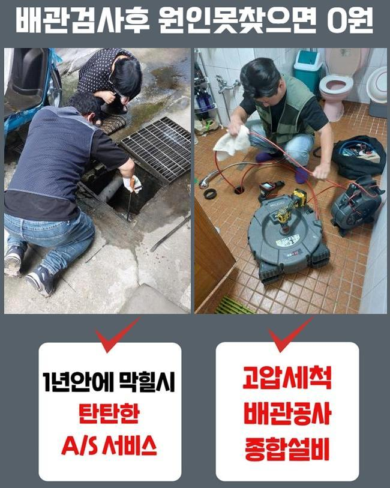
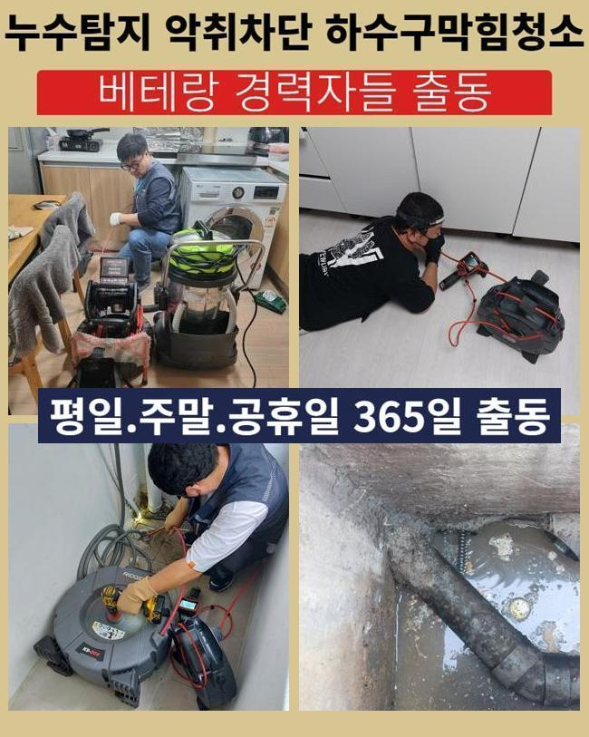
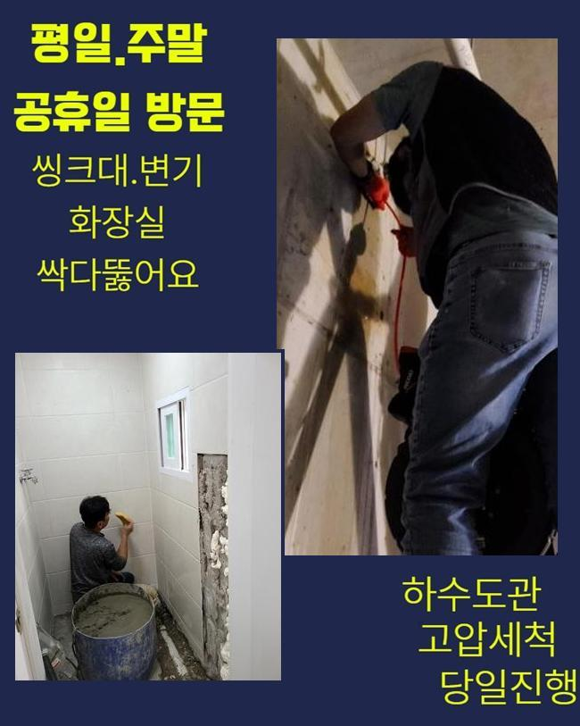
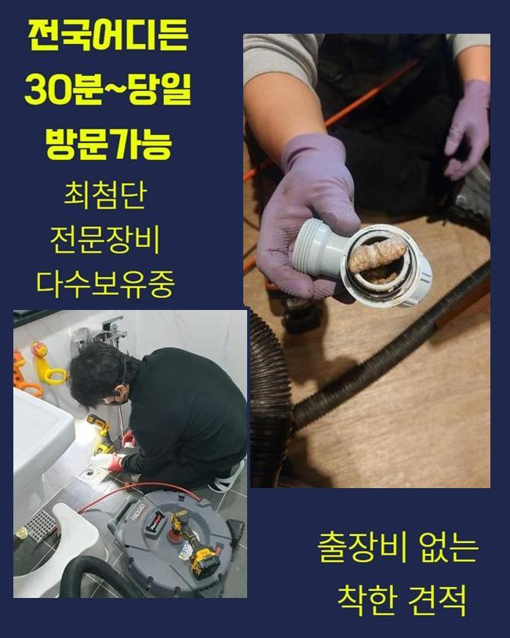
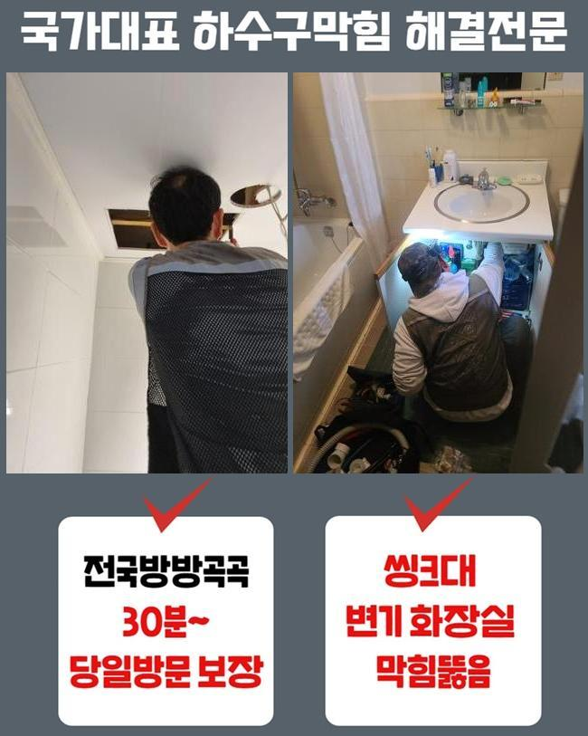
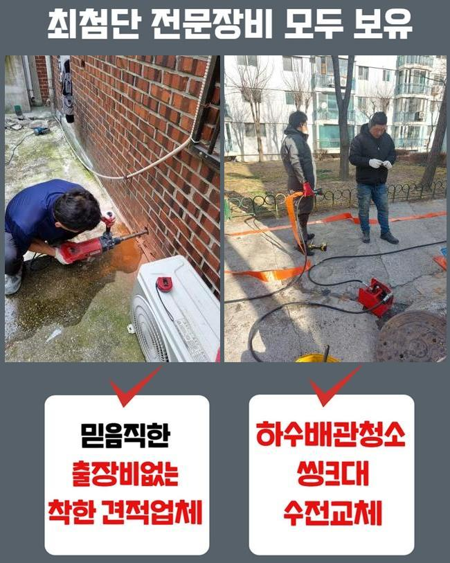
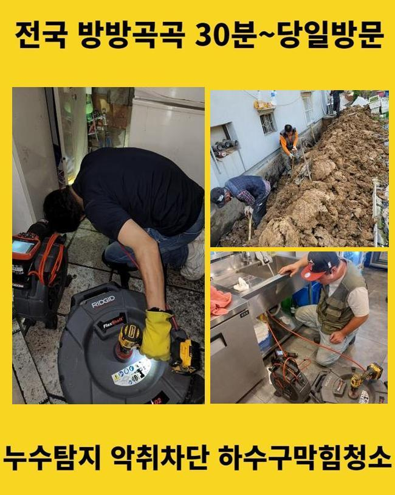

🏠 아산 기산동씽크대뚫음 도고면 하수구청소장비 배관공사
아산 싱크대막힘 전문 시공 후기

📋 작업 개요
- 위치: 아산
- 서비스 유형: 싱크대막힘, 하수구막힘, 배관막힘, 집수정막힘, 역류해결, 뚫는업체, 배관청소, 설비공사
- 작업 일시: 2025. 5. 23. 13:05
- 업체명: 하수구수사대 (010-5615-2118)
🔍 문제 상황
아산 기산동씽크대뚫음 도고면 하수구청소장비 배관공사
연립 주택 내부 하수설비를 점검하지 않는 경우엔 노폐물이 층을 이루면서 배수구 막힘사고가 일어날 일들이 많아집니다
현재 사용하시는 하수설비의 사용년수가 오래 되셨다면 정기적으로 하수구의 상태를 파악하시는 것이 좋습니다
점심쯤이 지나서 고객분께서 배수라인이 막혀 역류가 발생한다고 전화주셨어요
이번 현장은 조금 외진 곳의 주택이였고 집근처에 규모있는 캠핑장도 영업을 하는 상황이였어요
건물을 올린지 그리 오래된게 아닌데 건물 외부에 역류현상이 자주 보인다고 하셨어요
확인해본 결과로는 창고안에 설치된 집수정이 밖에 위치한 정화조로 유입시키는 형태였습니다
정화조가 위치한 곳이 꽤 멀어서 창고에 설치하는게 가장 낫다고 하셨대요
사례자님께 막힌지점을 찾아도 중간 점검구가 없는 경우엔 예상시간이 길어질거라고 설명 해드렸더니 동의를 해주셨습니다
집수정에서 내시경기기를 넣었으나 오염물질이 너무 많아 더이상 라인이 들어가질 않았어요

🔎 원인 분석
💡 전문가 진단: 정밀 진단 장비를 사용하여 슬러지의 고착 여부를 판명하고 타격/세척 작업을 실시했습니다.
불순물이 꽉 막혀있는 상황을 고객님께도 보여드렸어요
샤프트장비로 시공을 이어나갔어요
기기에 머리카락과 물티슈가 끝도없이 엉켜서 빠져나왔어요
일반적인 역류를 발생시키는 막힘요소는 물티슈나 머리카락들이 가장 많아요
고객분께 모두 분리배출을 해야한다고 설명드렸어요
물티슈 자체는 화학제품으로 종이류가 아닌 플라스틱이므로 물과 만나도 녹지 않는 특징을 가지고 있습니다
최근에 물에 잘 풀어지는 제품도 나왔다고 하지만 한번에 많이 사용하시면 하수라인이 점차 막히면서 역류현상이 나타날 수 있습니다
하수라인 안에 있던 이물질들과 엉켜 슬러지화 되면서 막힘사고를 유발합니다
사용자께서 머리카락 외 이물질들을 분리하여 버리셔야 해요
배수라인은 하수만을 다루는 시설인 것을 기억하여 오염물질은 분리배출을 원칙으로 하시길 바랍니다

🔧 작업 과정
다음으로 창고쪽에서 내시경 작업을 이어갑니다
하수라인이 길게 설치되어 있어서 내시경기기계가 끝쪽까지 들어가는게 부담돼서 쏜드기기를 사용했어요
막혀있는 부분에 반복적으로 노폐물 제거작업을 이어나갔습니다
집수정과 동일하게 머리카락 외에도 물티슈가 계속 나오는 것을 보고 의뢰인께서도 심각한 상황을 아시고 놀라셨습니다
저희 전문 기술진에게 이와같은 막힘사고가 일어나지 않게 할 수 있는 예방법을 알려달라고 말씀하셔서 꼼꼼하게 답변 해드렸습니다
보통 사용하시면서 작은 쓰레기 같은건 일단 내려가면 녹거나 흘러갈거라고 많이들 생각하시지만 배관의 경사도에 따라서 내부에 노폐물도 있어서 녹지 않는 물티슈와 음식에서 나오는 기름을 버리시면 안돼요
내시경기기를 활용해서 노폐물이 전부 제거 되었는지 확인했습니다
정화조와 집수정의 완벽하게 체크를 했고 남은 불순물 하나없이 깔끔한 배관이 보였어요
고객님께도 보여드렸더니 안심 되신다고 하셨어요
사용을 하시다가 문제가 생겼을때 염산등을 부으면 쉽게 해결을 할 수 있다고 알고있는 분들도 있지만 그건 매우 위험합니다
고객분께서 이용을 하시면서 이물질들을 따로 배출하며 집의 연식이 많이 되었다면 사전에 전문 기술진에게 의뢰하여 예방하는 차원에서 검진을 진행하셔야 해요
작은 문제들을 그냥 두시면 역류사고가 발생되면서 대규모 공사를 하게되어 금액적인 부담이 커지게 돼요
어떤일도 마차가지로 배수관 문제를 방치하시면 비용적인 면에서 부담이 커진다는걸 기억해주시길 바랍니다
작업이 끝난 후에 주변의 오염을 정리하고 청소를 진행했습니다
하수에서 심한 악취가 발생해서 특수세제로 청소하고 수전에 호수를 이어서 전체적으로 청소했습니다
원래는 이러한 오염물질까지 저희 전문진이 청소 해드리는 일은 없었습니다


✅ 작업 완료
이번같은 현장의 경우에 악취가 너무 심한 편이라서 저희도 그냥 두고 올 수가 없었어요
저희 전문 기술진은 하수관의 물티슈는 당연하고 하수시설 안의 이물질들을 배출시켜 물의 흐름 상태가 제대로 되는 상황까지 최종점검을 꼭 진행해요
의뢰인께서 저희를 신뢰하여 의뢰를 주실 수 있게 최선을 다하며 비슷한 문제로 자세한 사항을 알고 싶으시다면 편하게 문의 주시기 바랍니다
하수시설의 문제점을 더 나은 방법으로 처리하시려면 최대한 신속한 대응법이 베스트라는 것을 알고 계셔야 합니다
일상 생활 속에서 이러한 하수설비의 이상문제가 발생하지 않아야 하지만 혹시라고 일어났다면 최대한 빠르게 전문적인 업체에 문의하시길 바랍니다




⚠️ 주방 싱크대 배관 막힘 예방 수칙
- ✅ 기름기가 묻은 식기나 프라이팬은 설거지 전 키친타올로 반드시 기름때를 닦아내세요.
- ✅ 주기적으로 싱크대 개수대에 뜨거운 물을 가득 받아 한 번에 내려 배관 내부 기름을 씻어내세요.
- ✅ 배수구 거름망을 미세한 필터로 사용하시고 음식물 찌꺼기가 틈으로 새어 들지 않게 관리하세요.
- ✅ 베이킹소다와 식초를 뜨거운 물과 함께 일주일에 한 번씩 부어주면 배관 살균과 막힘 예방에 좋습니다.
💡 핵심 정리
- 확실한 장비 작업(내시경 점검 및 샤프트 스케일링)으로 원인을 뿌리 뽑습니다.
- 작업 후 1년 이내에 동일한 부위 재발 시 100% 무상 A/S 서비스를 보장합니다.
- 서울 · 경기 · 인천 전 지역에 24시간 언제든 긴급 출동할 수 있도록 항시 대기 중입니다.
❓ 자주 묻는 질문 (FAQ)
🚨 아산 싱크대막힘 문제로 고민이신가요?
정확한 원인 진단과 확실한 시공으로 재발 없는 해결을 약속드립니다.
24시간 긴급 출동 | 서울 · 경기 · 인천 전지역 | 1년 내 재발 시 무상 A/S